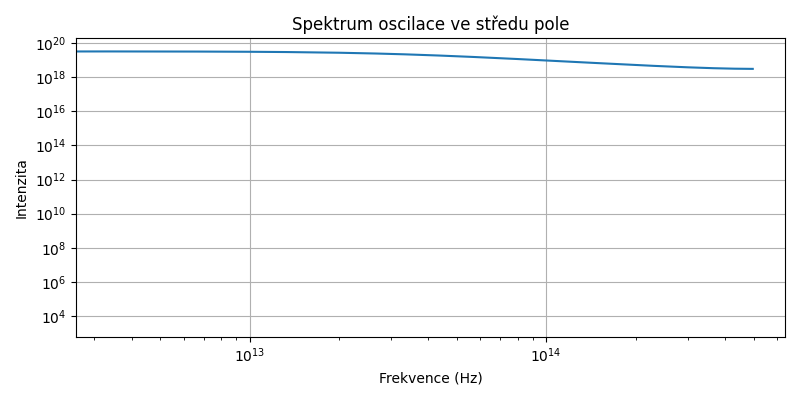
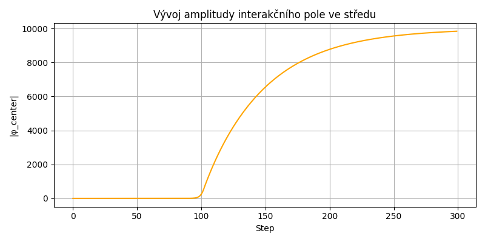
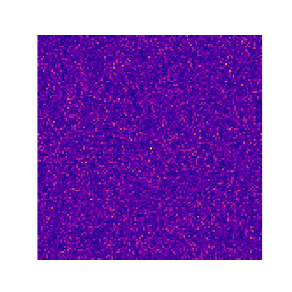
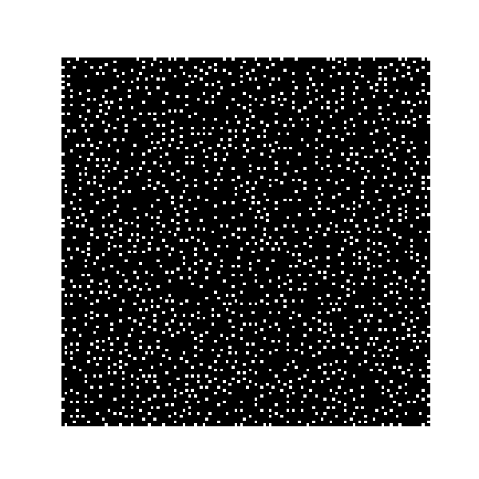

| Property | Value |
|---|---|
| Dominant frequency | 3.33e+12 Hz |
| Energy | 2.21e-21 J |
| Wavelength | 8.99e-05 m |
See full spectrum: spectrum_log.csv






The name Lineum is a coined term from the Latin linea ("line" or "thread"), symbolizing the filament-like tension structures that emerge in the field. It refers to a hypothetical quantum field defined by local, nonlinear evolution rules. This field exhibits spontaneous formation of vortices, oscillations, topological effects, and quasiparticles.
Pronunciation: line-um (Czech: lineum, as written).
The name follows a tradition of physics-inspired constructs such as graviton, inflaton, or axion—terms that suggest emergent dynamics without predefining their exact physical nature.
(c) Lineum – emergent quantum field simulation